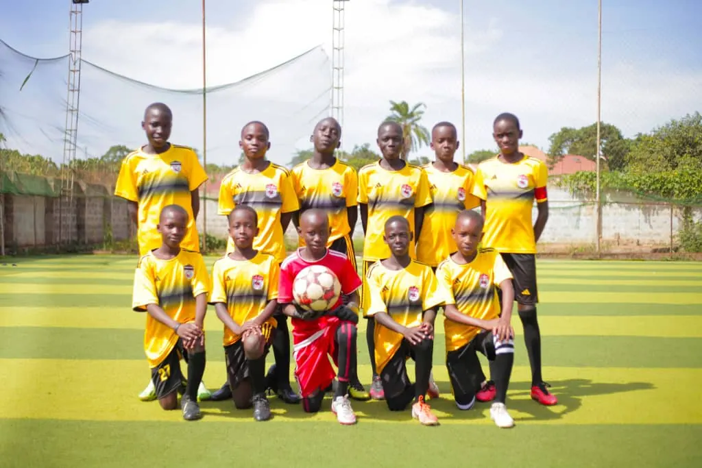
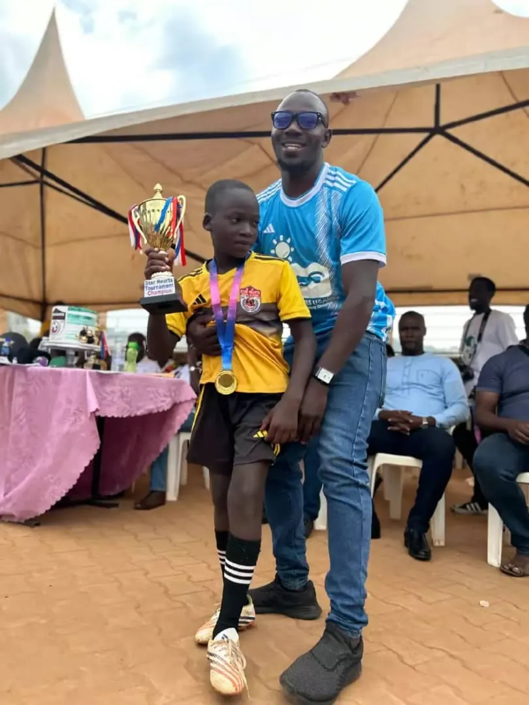

A family built around a football
Star Hearts Foundation grew out of Star Hearts Sports Academy to go further for the talented children who need it most: the ones without school fees, without a meal, or without a home at all.
Our story
In August 2012, training sessions began in Kitende with just three children. The idea was bigger than football: to create real opportunities for young people in the community who rarely get them, including children with disabilities.
The academy grew into a home for more than a thousand young people, with coaches, two pitches, trophies and partner schools. Along the way, our coaches kept meeting children whose talent was obvious but whose lives were not safe: children sleeping on the streets, children out of school, children going without food.
Star Hearts Foundation is our answer to them. It finds scholarships and bursaries, runs a home where talented children without a home can live, and relies on volunteers for food and clothes. Above all, it gives every child a family that loves them.

Our mission
To take talented children off the streets, develop their gifts through football, return them to school, and give them a home and a family.
Our vision
A Uganda where no talented child is lost to the street for want of a roof, a meal or school fees.
Milestones
From three children on a field to an academy, a second branch, and now a foundation.

The first sessions
Training begins in Kitende with three children.
Partnership with Down Syndrome Foundation Uganda
Sport and skills for children with Down syndrome.
Official launch and sports gala
Five local teams take part and the academy wins two trophies, in the Under-10 and Under-15 categories.
Star Hearts Sports Academy Limited
The academy is incorporated as a company in Uganda.
Visitors from Sweden
A week of knowledge exchange and friendly matches.
Star Hearts Hoima
A second academy opens in Hoima.
207 players and a foundation
Seven trophies, five partner schools, and a foundation for the children who need us most.

What we teach every child
Our values are painted on the wall where every child can see them. Coaches teach them alongside passing and positioning.
The team behind Star Hearts
The foundation is led by the same people who built the academy.
Mulumba Ismail
Director and Founder
Byamugisha Peter
Chief Financial Officer
Irene Kagiega
Public Relations Officer
We work with
Schools that open their doors to our children, and organisations that help us include every child.
- Kingsway High School
- Fairys Junior School
- SK Fountain Junior School
- Namagunga Girls Primary School
- Little Dolphins Primary School
- Down Syndrome Foundation Uganda
- Embrace Autism Uganda
- Embrace Down Syndrome Uganda